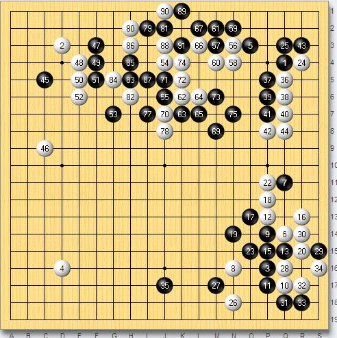

BC卡杯观战 朴永训续写玛丽传奇击败常昊 鲁佳弈城精彩讲解
#1 BC卡杯观战 朴永训续写玛丽传奇击败常昊 鲁佳弈城精彩讲解作者：潇洒 发表时间：2009-3-29 0:57:39
BC卡杯今天又将进行一场16进8的比赛，由中国常昊九段对阵韩国朴永训九段，这2个人可谓是老对手了，棋风相近，都以厚实闻名棋坛，2人之间的战绩常昊3胜4败落后，BC卡杯上常昊战胜崔原踊、崔圭丙，朴永训一路战胜姜升希、金大熙、孙力、安祚永和朴时烈后两人相遇。非常有意思的是最近弈城围棋网有位大红人---超级玛丽，狂砍20位中国9段，被疑似朴永训，而前2天朴文尧，古力的胜利多少使中国棋迷期待膨胀，希望看到常昊的出色表演，希望看到网络中的玛丽被现实中的中国韧圣斩落，这一场战斗被演绎得血雨腥风，可以想象棋迷的期待是何等的强烈！弈城围棋网为了满足棋迷的愿望，特邀鲁佳初段全程讲解BC卡杯的这场决斗！鲁佳初段在弈城很有人气，她的弈城号克林斯曼＊也是棋迷们很熟悉的9段，她一来到讲解室就非常客气的和棋迷们打招呼：“大家好 ，我是鲁佳 ，很高兴来到弈城为大家讲解这盘棋。”
战斗开始，朴永训执黑以近期非常流行的星无忧角布局对常昊的二连星，双方右下的定式也是最近流行的变化，对这个变化鲁佳发表了看法：“昨天晚上我在棋院刚看国手们研究了右下角这个定式的变化， 实战的下法是白稍好，不过，白稍好是我们研究的结果，也许韩国人不见得这么觉得啊？”在有棋友问她押谁时，鲁佳很豪爽的说：“我肯定压常昊啊！”在有棋迷问她的生活时，她也很坦白的说：“不下棋就看棋 ，不看棋就摆棋。累了就运动下， 喜欢打打乒乓 球和羽毛球”。哈，看来，鲁佳的业余生活还是很丰富多采的。
当看到白56时，鲁佳大吃一惊：“白56碰有太靠近黑厚壁之感。有点过分了，黑右上角太厚没办法再跟着应了 反击是必然的了。”当白在黑厚势中苦苦寻找活路时，鲁佳也是比较担心：“：白棋下的有点苦，感觉白棋的子都下在了黑的铜墙铁壁上， 没有杀伤力。看来常昊今天发挥有点失常”。的确如此，常昊在行棋上犯兵家大忌，在上面的寻找活路中，到处损失，劫争的结果是黑在下方形成了滔天模样，见到棋下这样，鲁佳说：“可能是第一次晚上下比赛， 常昊还没适应。。”当黑下到110时，鲁佳说：“黑的中间随便扔一颗 潜力就无限大了。”
白114作最后的拼搏，无奈，黑全盘厚实，常昊经过努力后219手后认输，朴永训续写玛丽传奇，击败常昊进入8强，希望明天黄奕中能给棋迷们带来更大惊喜！

#2 Re:BC卡杯观战 朴永训续写玛丽传奇击败常昊 鲁佳弈城精彩讲解作者：wrwak 发表时间：2009-3-29 11:54:53
 72 74那大片是死的
72 74那大片是死的